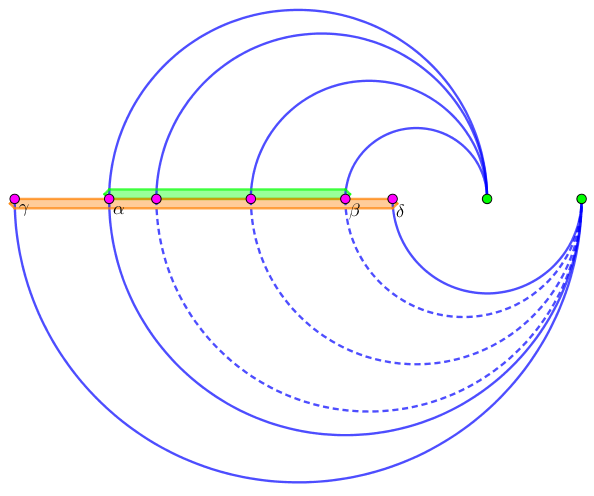

JOI 港口虽然很小，却非常繁忙。
JOI 港口放置集装箱的结构可视为两个本质不同的栈。每天从船上卸下的集装箱会被压入某个栈，而被运出港口的集装箱则从栈顶弹出。
今天 JOI 港口会迎来 $N$ 个集装箱，它们在今天内会被运出港口。今天出入口有 $2N$ 条记录，每条记录都表示一个集装箱到港或离港。
第 $i$ ($1 \leq i \leq N$) 个集装箱的到港记录为 $A_i$，离港记录为 $B_i$。
我们把 $N$ 个集装箱分别放在哪个栈称为一个方案。求放置集装箱的方案数 $\bmod \left( 10^9 + 7 \right)$。
第一行包含一个正整数 $N$ ($N \leq 10^6$)。
接下来的 $N$ 行，第 $i$ 行包含两个正整数 $A_i, B_i$ ($1 \leq A_i, B_i \leq 2 N$，且 $A_i, B_i$ 互不相同)。
输出一行一个整数，表示放置集装箱的方案数 $\bmod \left( 10^9 + 7 \right)$ 的值。
对于每一种合法方案，可以用一个 $n$ 元集 $V = \left\{ 1, 2, \cdots, n \right\}$ 的有序拆分 $\left( S, T \right)$ 来表示，其中 $S \cap T = \varnothing, S \cup T = V$，$S$ 中元素均被压入第一个栈，$T$ 中元素均被压入第二个栈。
考察一个拆分 $\left( S, T \right)$ 合法的充要条件。显然，两个栈之间是互不影响的，因此，只需考虑每个栈是否合法。
由合法栈序列的性质，一个栈中可以压入集合 $S$ 中的所有物品，当且仅当 $S$ 中物品的出现区间形成一个 "嵌套结构" (nested relation) (即两个区间要么不交，要么互相包含)。
因此，对于 $u, v \in V$，若 $\left[ A_u, B_u \right] \cap \left[ A_v, B_v \right] \neq \varnothing$ 且 $\left[ A_u, B_v \right]$ 和 $\left[ A_v, B_v \right]$ 不互相包含，则在 $u, v$ 之间连一条边。于是我们得到一张图 $G$。
此时，每个栈中的元素对应到图中一定是一个独立集。于是我们就需要求图 $G$ 拆分成两个独立集的方案数，换一种方法说，即图 $G$ 的 $2-$染色数。
众所周知，一个图可以被 $2-$染色当且仅当它是二分图，一个二分图的 $2-$染色方案数等于 $2^C$，其中 $C$ 为 $G$ 连通分量个数。
于是我们现在所要做的，就是判断 $G$ 是否是二分图，如果是，求出它的连通分量个数。
而图 $G$ 的规模非常大，边数可以达到 $O \left( N^2 \right)$ 级别，因此我们需要优化连边。
考虑两个物品 $\left[ a, b \right]$ 和 $\left[ c, d \right]$。它们之间有连边当且仅当 $a < c < b < d$ ($a, b, c, d$ 互不相同，先不考虑对称的情况)。
因此，固定一个物品 $\left[ a, b \right]$ 后，它能连向的所有物品需要满足：左端点在 $\left( a, b \right)$ 之间，且右端点超过 $b$。
首先，维护出按照左端点排序后的物品序列 $seq_0$，然后按照右端点从小到大枚举物品。
设枚举到物品 $u = \left[ a, b \right]$，用一个集合 $S$ 记录当前右端点 $< b$ 的物品集合，然后根据左端点序列 $seq_0$ 从 $a$ 到 $b$ 开始枚举，对于每一个不出现在 $S$ 中的物品 $v$，连边 $\left( v, u \right)$。
具体地，我们可以使用链表来代替 std::set 来维护集合 $S$。每当枚举完物品 $u$ 后，只需在链表中将 $u$ 删去。由于链表具有可删除性，因此这样连边的时间复杂度就达到了 $O \left( \left| E \right| \right)$ (其中 $\left| E \right|$ 为实际边数)。
但是这样还是太慢 (因为实际边数可能很大)。由于我们的目标是检验二分图和判断连通分量，因此根据这道题的理论，一个连通分量中边数过大在某种程度上是无意义的。
那么怎样才能优化连边呢？
观察我们目前的连边方案：对于一个物品 $u$，它会和 $seq_0$ 中一段连续的物品 $v_1, v_2, \cdots, v_k$ 连边。此时 $v_1, v_2, \cdots, v_k$ 都是连通且同色的。
那么如果下一轮的连边的范围和 $v_1, v_2, \cdots, v_k$ 有交，那么由连通性，这些边其实只连一条就够了。
设第一轮连边的范围为 $\left[ \alpha, \beta \right]$，第二轮连边的范围为 $\left[ \gamma, \delta \right]$，如下图所示。
如果第二轮连边时覆盖了第一轮的范围，如上图可以发现，中间一些边已经被确定为同色，再次确定就有些浪费了，因此我们不需要给它们连边 (虚线)，可以直接跳到 $\beta$ 后面的第一个点再去连边 (实线)。
况且，由于端点只会被不断删除而不会加入，因此这样连边是不会遗漏的 (因为一开始连的边肯定比你现在的 "细")。
具体地，对于每个左端点，我们对其维护一个 $next$，表示如果现在再对它进行连边，应该跳到哪里。
如上图，在第一轮连边结束后，绿色的所有点的 $next$ 指针都应连向 $\beta$ 后面的第一个点。
这样连边的数量就会减少很多，且不改变二分性和连通性。
最后再对整张图使用 dfs/bfs 或带权并查集判断一下是否是二分图，以及求出连通分量的个数，即可求出答案。
这部分的时间复杂度和路径压缩并查集的分析相似，为 $O \left( N \log N \right)$。
因此总时间复杂度为 $O \left( N \log N \right)$。
#include <bits/stdc++.h>
typedef long long ll;
const int N = 2000054, mod = 1000000007;
int n;
int p[N], id[N];
int cnt = 0, a[N];
int left[N], next[N];
ll PowerMod(ll a, int n, ll c = 1) {for (; n; n >>= 1, a = a * a % mod) if (n & 1) c = c * a % mod; return c;}
// list
int ancestor(int x) {return p[x] == x ? x : (p[x] = ancestor(p[x]));}
namespace Graph {
int E = 0;
int to[N], first[N], next[N];
int col[N];
inline void addedge(int u, int v) {
to[++E] = v, next[E] = first[u], first[u] = E;
to[++E] = u, next[E] = first[v], first[v] = E;
}
bool dfs(int x) {
int i, y;
for (i = first[x]; i; i = next[i])
if (~col[y = to[i]] ? col[y] == col[x] : (col[y] = !col[x], !dfs(y))) return false;
return true;
}
int main() {
int i, c = 0;
memset(col, -1, sizeof col);
for (i = 1; i <= n; ++i) if (!~col[i] && (++c, !dfs(i))) return 0;
return c;
}
}
int main() {
int _, __, i, j, l, r;
scanf("%d", &n);
for (i = 1; i <= n; ++i) scanf("%d%d", &l, &r), id[l] = id[r] = i;
std::iota(p, p + (n + 2), 0), std::iota(next, next + (n + 1), 0);
for (_ = 1; _ <= n * 2; ++_)
if (!left[i = id[_]]) a[++cnt] = i, left[i] = cnt;
else
for (j = p[left[i]] = ancestor(left[i] + 1); j <= cnt; j = __)
Graph::addedge(a[j], i), __ = ancestor(next[j] + 1), next[j] = cnt;
printf("%d\n", (r = Graph::main()) ? (int)PowerMod(2, r) : 0);
return 0;
}
坑1：由于 $A_i, B_i \leq 2 N$，因此不需要显式地使用 std::sort 来排序，可以使用直接对每个值记录编号，扫一遍即可 (计数排序)。注意数组要开到 $2 N$。